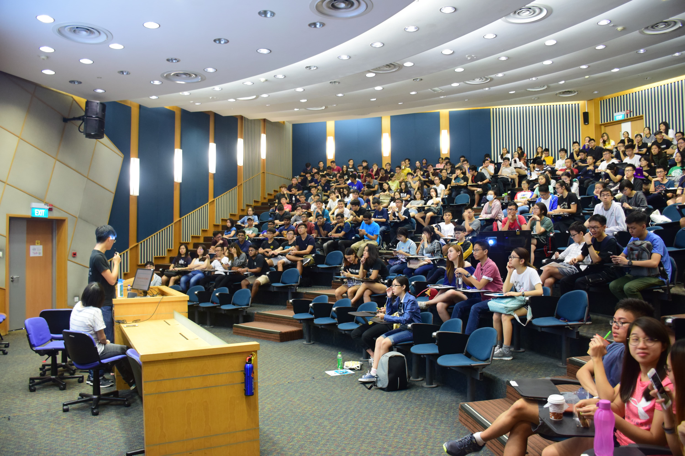
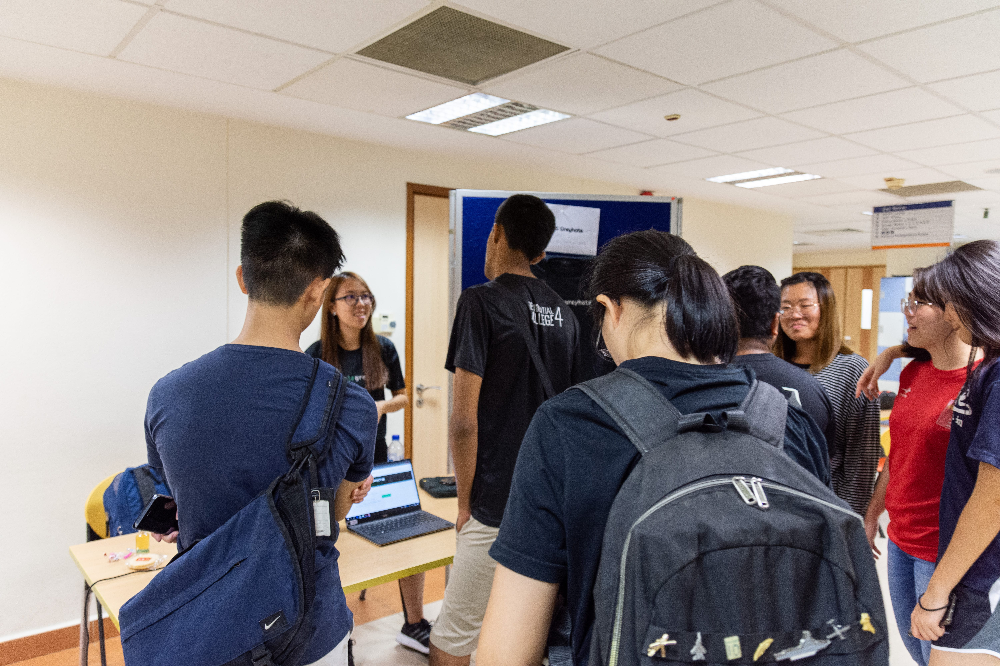

You’ve made it to SoC, but your journey as a university student has just begun! While you’re making new friends, let us make you comfortable with the different systems available that will take the load off being a student. Module planning, webcasts, student clubs, Acad Day has got it covered! This year, the faculty briefing and student-arranged Academic Day will be combined together under the Acad Day banner.

Get comfortable, and let us show you the different systems you’ll be using as a student. We’ll be covering frequently used platforms like LumiNUS, Module Registration, and NUSMods, to show you how to simplify your student life.

And if you’re looking to go beyond your studies, our student clubs are recruiting! Whether you’re looking to learn or compete, we have different interest groups that cater to your niche!